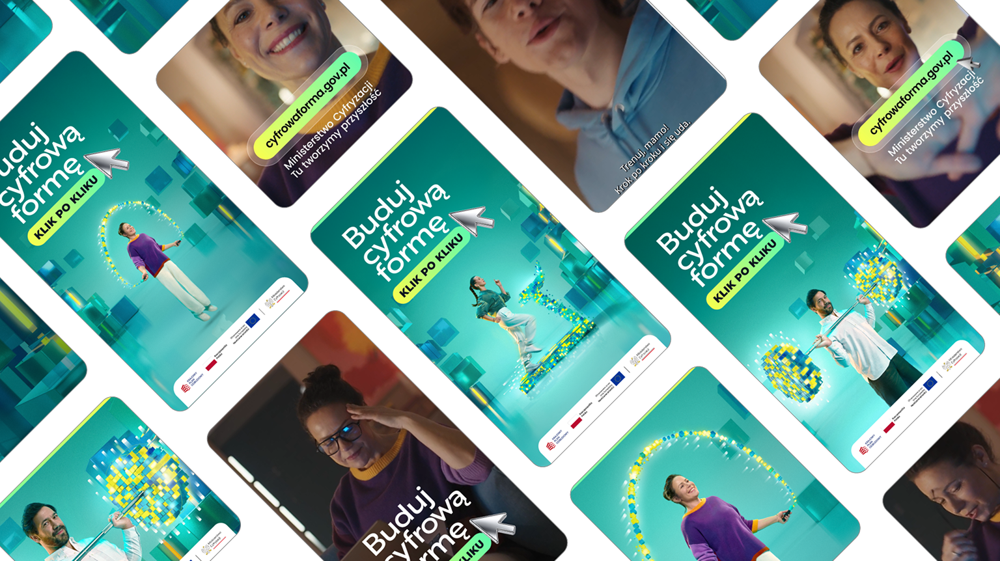
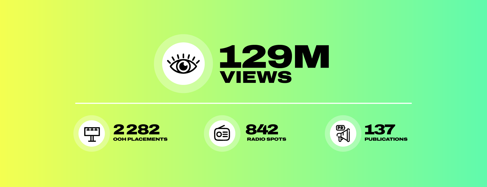
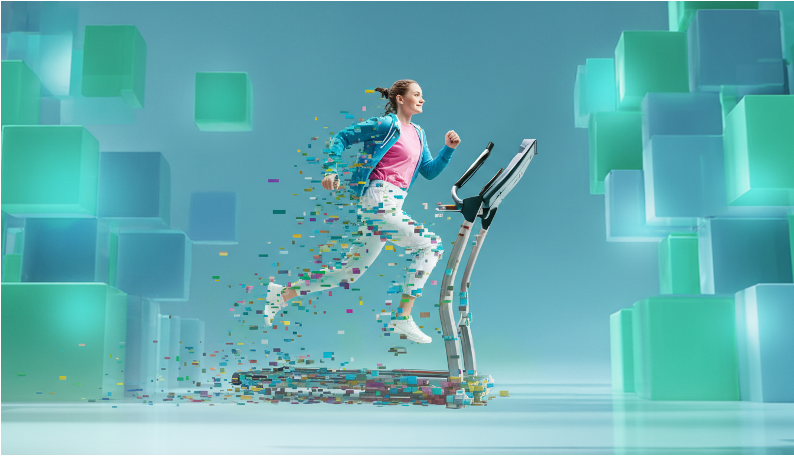
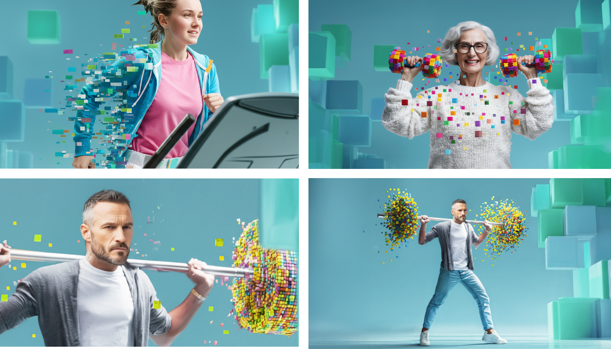
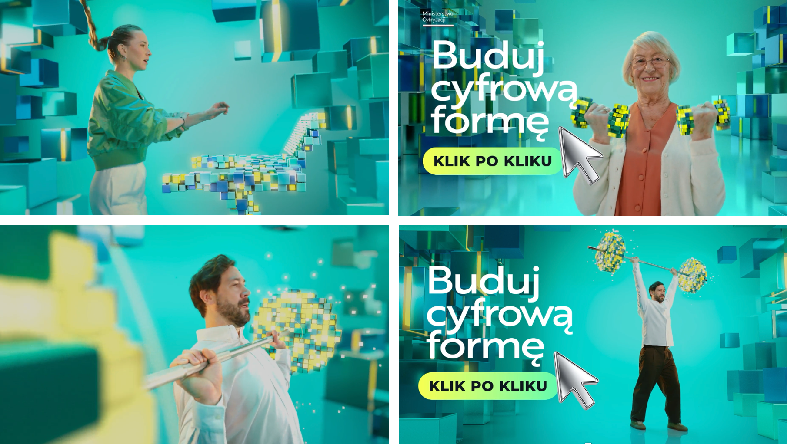
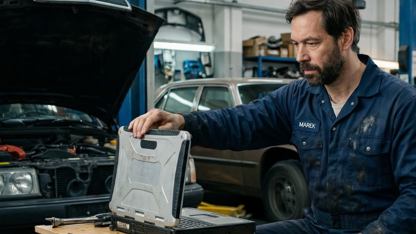
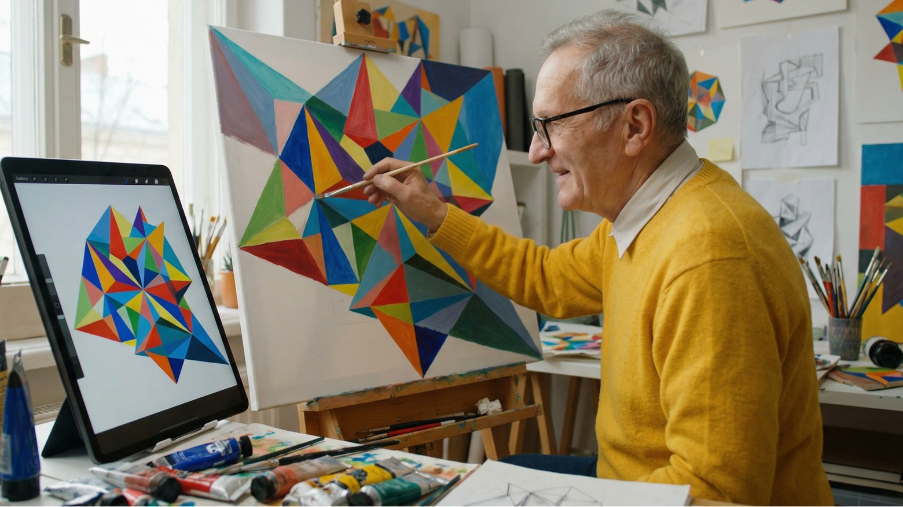

Campaign for Ministry of Digital Affairs
The rapid pace of technological change is transforming everyday life. Digital skills are no longer optional – they've become essential, regardless of age, education, or profession. Without continuous learning, it's easy to fall behind.
We introduced the idea that digital skills are like muscles – they need regular training to stay strong. Built around the message "Build your digital form, step by step," the campaign showed that small, consistent actions are enough to keep up with technology and make every new digital challenge feel lighter.
The name is a play on words: being in good digital form is just like being in good physical form. Not a one-off makeover, but small, repeatable reps – a few clicks at a time, at whatever pace fits your own life.

The campaign ran across national and regional TV and radio, online, and the Ministry's own channels – paired with cyfrowaforma.gov.pl, a companion site where visitors can take a short digital-skills test and see exactly what to work on next.
We started with the basics – the skills people need every day. We showed that digital skills are now a ticket to stable employment.

Then we talked about the everyday skills seniors need to navigate the digital world with more confidence.
It's a response to how fast technology moves: learning no longer stops after school or university – today it continues for life. So the campaign's main goal is to encourage people to keep building their own digital skills, both at home and at work, with a focus on agency – the sense that even small steps count.

At the tender stage, we showed the client and approved the future style of the campaign; previously, this happened already at the production stage when the director came into the process.

AI Production
Production
Previously, we created storyboards by turning to illustrators, which extended the video production process – and the client always had to remember that a drawn storyboard was just a sketch, not to be taken too literally. Now we can build storyboards that are close in style and color to the final result we're aiming for.

Storyboard
FinalWhen we filmed the campaign's continuation, we wanted to keep the same actors – developing each character introduced in the first spot. So we generated the storyboards straight away with the faces of the actors we had in mind, and the client could see them in frame before casting was even confirmed.

Storyboard Final
Final

Storyboard Final
Final
Despite using AI for image and video generation, we followed the same creative process as any live-action production. We started with a script, worked with a director, went through casting, location scouting, and creative approvals before moving into AI production.

Sticking to the classic production process was a deliberate choice. We worked with a director and went through every phase of filmmaking, which gave us control at each stage of the project and minimized the usual drawbacks of working with AI.